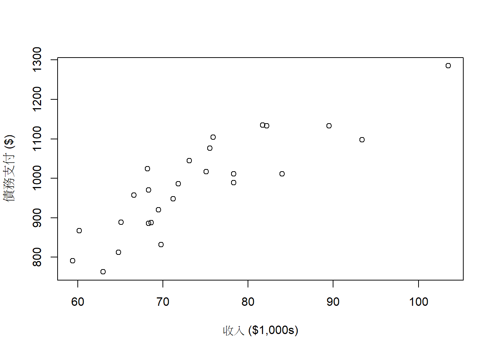
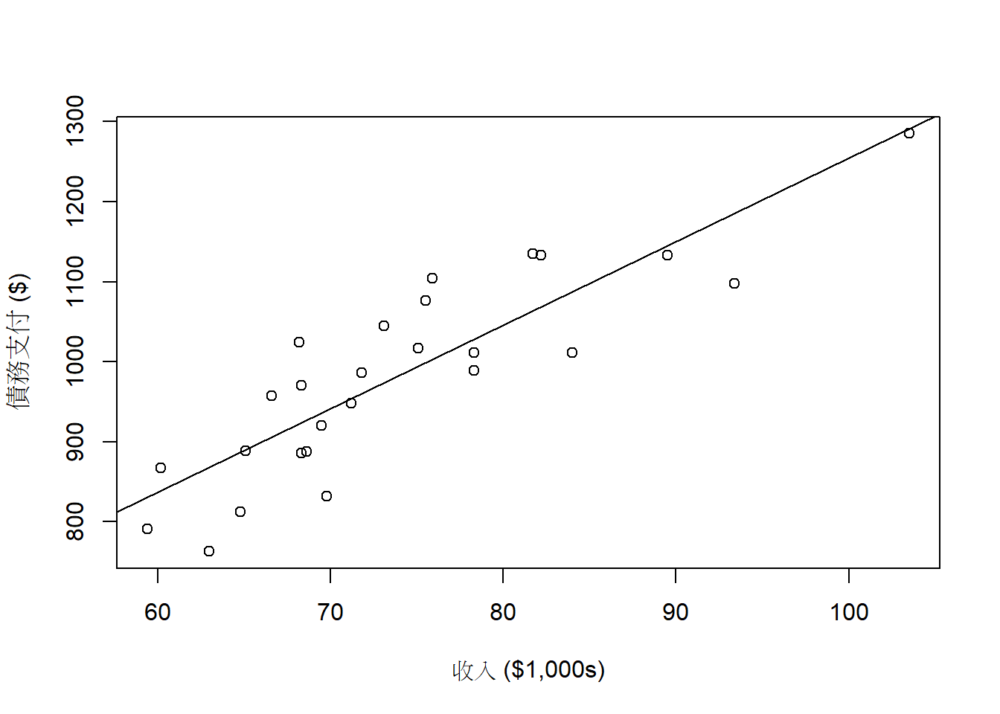

12 Chapter 14 Regression Analysis
Chapter14.xlsx 下載點
12.1 安裝、載入套件&讀檔
# 載入套件
library(openxlsx)
library(ggplot2)
# 讀取檔案
file_path <- "D:/college information/R_statistics/Data Files/Chapter14.xlsx" # 更改成您要讀取之xlsx的路徑
sheet_name_1 <- "Debt_Payments" #這裡輸入您要讀取的sheet的名稱
# 使用read.xlsx函數讀取指定的工作表
debt.payments.df <- read.xlsx(file_path, sheet = sheet_name_1)
head(debt.payments.df)## Metropolitan.area Debt Income Unemployment
## 1 Washington, D.C. 1285 103.5 6.3
## 2 Seattle 1135 81.7 8.5
## 3 Baltimore 1133 82.2 8.1
## 4 Boston 1133 89.5 7.6
## 5 Denver 1104 75.9 8.1
## 6 San Francisco 1098 93.4 9.312.2 簡單線性迴歸分析(Simple Linear Regression)
範例14.4，使用 debt.payments.df 數據文件來估計一個簡單線性迴歸模型，並生成相關的回歸和 ANOVA 表。
12.2.0.1 I. 假設
H_0(虛無假設): 自變量 (Income) 對應變量 (Debt) 沒有顯著影響
H_A(對立假設) : 自變量 (Income) 對應變量 (Debt) 有顯著影響12.2.0.4 IV. 獲取回歸模型摘要
##
## Call:
## lm(formula = Debt ~ Income, data = debt.payments.df)
##
## Residuals:
## Min 1Q Median 3Q Max
## -107.087 -38.767 -5.828 50.137 101.619
##
## Coefficients:
## Estimate Std. Error t value Pr(>|t|)
## (Intercept) 210.298 91.339 2.302 0.0303 *
## Income 10.441 1.222 8.544 9.66e-09 ***
## ---
## Signif. codes: 0 '***' 0.001 '**' 0.01 '*' 0.05 '.' 0.1 ' ' 1
##
## Residual standard error: 63.26 on 24 degrees of freedom
## Multiple R-squared: 0.7526, Adjusted R-squared: 0.7423
## F-statistic: 73 on 1 and 24 DF, p-value: 9.66e-0912.2.0.5 V. 進行 ANOVA 分析
## Analysis of Variance Table
##
## Response: Debt
## Df Sum Sq Mean Sq F value Pr(>F)
## Income 1 292137 292137 73 9.66e-09 ***
## Residuals 24 96046 4002
## ---
## Signif. codes: 0 '***' 0.001 '**' 0.01 '*' 0.05 '.' 0.1 ' ' 112.2.0.6 VI. 結果解讀
1. 迴歸係數：
截距 (估計值 = 210.298, p 值 = 0.0303)：
這表示當收入為零時，預計債務為 210.298 單位。
收入 (估計值 = 10.441, p 值 = 9.66e-09)：
此係數非常顯著（p 值 < 0.001），表明收入對債務有強烈且正向的影響。
2. 模型擬合度：
R 平方 = 0.7526，調整後的 R 平方 = 0.7423：
這表示約 75.26% 的債務變異可以由收入解釋。
3. ANOVA F 統計量：
F 統計量 = 73，p 值 = 9.66e-09：
整體模型具有統計顯著性，表明收入對債務具有顯著的預測能力。12.3 多元迴歸分析(Multiple Regression)
範例14.6
12.3.0.4 IV. 獲取回歸模型摘要
##
## Call:
## lm(formula = Debt ~ Income + Unemployment, data = debt.payments.df)
##
## Residuals:
## Min 1Q Median 3Q Max
## -110.456 -38.454 -5.836 51.156 102.121
##
## Coefficients:
## Estimate Std. Error t value Pr(>|t|)
## (Intercept) 198.9956 156.3619 1.273 0.216
## Income 10.5122 1.4765 7.120 2.98e-07 ***
## Unemployment 0.6186 6.8679 0.090 0.929
## ---
## Signif. codes: 0 '***' 0.001 '**' 0.01 '*' 0.05 '.' 0.1 ' ' 1
##
## Residual standard error: 64.61 on 23 degrees of freedom
## Multiple R-squared: 0.7527, Adjusted R-squared: 0.7312
## F-statistic: 35 on 2 and 23 DF, p-value: 1.054e-0712.3.0.5 V. 進行 ANOVA 分析
## Analysis of Variance Table
##
## Response: Debt
## Df Sum Sq Mean Sq F value Pr(>F)
## Income 1 292137 292137 69.9826 1.976e-08 ***
## Unemployment 1 34 34 0.0081 0.929
## Residuals 23 96012 4174
## ---
## Signif. codes: 0 '***' 0.001 '**' 0.01 '*' 0.05 '.' 0.1 ' ' 112.3.0.6 VI. 結果解讀
1. 迴歸係數：
截距 (估計值 = 198.9956, p 值 = 0.216)：
這表示當收入和失業率為零時，預計債務為 198.9956 單位，但 p 值不顯著，無法得出明確結論。
收入 (估計值 = 10.5122, p 值 = 2.98e-07)：
此係數非常顯著（p 值 < 0.001），表明收入對債務有強烈且正向的影響。
失業率 (估計值 = 0.6186, p 值 = 0.929)：
失業率的影響不顯著（p 值 > 0.05），因此我們無法確認失業率對債務的顯著影響。
2.模型擬合度：
R 平方 = 0.7527，調整後的 R 平方 = 0.7312：
這表示約 75.27% 的債務變異可以由收入和失業率解釋。
3.ANOVA F 統計量：
F 統計量 = 35，p 值 = 1.054e-07：
整體模型具有統計顯著性，表明收入和/或失業率對債務具有顯著的預測能力。12.4 構建帶有趨勢線的散佈圖
12.4.1 I. 使用 plot() 函數構建散佈圖
# 使用 debt.payments.df 數據文件來構建散佈圖。
# 使用 plot() 函數創建散佈圖，並且自定義 x 軸和 y 軸的標籤。
plot(debt.payments.df[,"Debt"] ~ debt.payments.df[,"Income"],
ylab = "債務支付 ($)", xlab = "收入 ($1,000s)")
12.4.2 II. 添加趨勢線
# 使用 debt.payments.df 數據文件來構建散佈圖。
# 使用 plot() 函數創建散佈圖，並且自定義 x 軸和 y 軸的標籤。
plot(debt.payments.df[,"Debt"] ~ debt.payments.df[,"Income"],
ylab = "債務支付 ($)", xlab = "收入 ($1,000s)")
# 使用 lm() 函數來構建一個簡單的線性回歸模型
# 然後使用 abline() 函數將趨勢線添加到散佈圖中
debt.income.lm <- lm(Debt ~ Income, data = debt.payments.df)
abline(debt.income.lm)
12.4.3 III. 使用 ggplot2 函數構建更精美的散佈圖
# 載入 ggplot2
library(ggplot2)
# 使用 ggplot2 創建帶有趨勢線的散佈圖
debt.income.plot <- ggplot(debt.payments.df, aes(Income, Debt)) +
geom_point() + # 添加數據點
geom_smooth(method = "lm", se = FALSE) + # 添加趨勢線
labs(x = "收入 ($1,000s)", y = "債務支付 ($)") # 添加自定義標籤
# 顯示圖表
print(debt.income.plot)## $data
## Metropolitan.area Debt Income Unemployment
## 1 Washington, D.C. 1285 103.5 6.3
## 2 Seattle 1135 81.7 8.5
## 3 Baltimore 1133 82.2 8.1
## 4 Boston 1133 89.5 7.6
## 5 Denver 1104 75.9 8.1
## 6 San Francisco 1098 93.4 9.3
## 7 San Diego 1076 75.5 10.6
## 8 Sacramento 1045 73.1 12.4
## 9 Los Angeles 1024 68.2 12.9
## 10 Chicago 1017 75.1 9.7
## 11 Philadelphia 1011 78.3 9.2
## 12 Minneapolis 1011 84.0 7.0
## 13 New York 989 78.3 9.3
## 14 Atlanta 986 71.8 10.3
## 15 Dallas 970 68.3 8.4
## 16 Phoenix 957 66.6 9.1
## 17 Portland 948 71.2 10.2
## 18 Cincinnati 920 69.5 9.3
## 19 Houston 889 65.1 8.7
## 20 Columbus 888 68.6 8.3
## 21 St. Louis 886 68.3 9.9
## 22 Miami 867 60.2 14.5
## 23 Detroit 832 69.8 15.7
## 24 Cleveland 812 64.8 9.6
## 25 Tampa 791 59.4 12.6
## 26 Pittsburgh 763 63.0 8.3
##
## $layers
## $layers[[1]]
## geom_point: na.rm = FALSE
## stat_identity: na.rm = FALSE
## position_identity
##
## $layers[[2]]
## geom_smooth: na.rm = FALSE, orientation = NA, se = FALSE
## stat_smooth: na.rm = FALSE, orientation = NA, se = FALSE, method = lm
## position_identity
##
##
## $scales
## <ggproto object: Class ScalesList, gg>
## add: function
## add_defaults: function
## add_missing: function
## backtransform_df: function
## clone: function
## find: function
## get_scales: function
## has_scale: function
## input: function
## map_df: function
## n: function
## non_position_scales: function
## scales: list
## train_df: function
## transform_df: function
## super: <ggproto object: Class ScalesList, gg>
##
## $guides
## <Guides[0] ggproto object>
##
## <empty>
##
## $mapping
## Aesthetic mapping:
## * `x` -> `Income`
## * `y` -> `Debt`
##
## $theme
## list()
##
## $coordinates
## <ggproto object: Class CoordCartesian, Coord, gg>
## aspect: function
## backtransform_range: function
## clip: on
## default: TRUE
## distance: function
## expand: TRUE
## is_free: function
## is_linear: function
## labels: function
## limits: list
## modify_scales: function
## range: function
## render_axis_h: function
## render_axis_v: function
## render_bg: function
## render_fg: function
## setup_data: function
## setup_layout: function
## setup_panel_guides: function
## setup_panel_params: function
## setup_params: function
## train_panel_guides: function
## transform: function
## super: <ggproto object: Class CoordCartesian, Coord, gg>
##
## $facet
## <ggproto object: Class FacetNull, Facet, gg>
## compute_layout: function
## draw_back: function
## draw_front: function
## draw_labels: function
## draw_panels: function
## finish_data: function
## init_scales: function
## map_data: function
## params: list
## setup_data: function
## setup_params: function
## shrink: TRUE
## train_scales: function
## vars: function
## super: <ggproto object: Class FacetNull, Facet, gg>
##
## $plot_env
## <environment: R_GlobalEnv>
##
## $layout
## <ggproto object: Class Layout, gg>
## coord: NULL
## coord_params: list
## facet: NULL
## facet_params: list
## finish_data: function
## get_scales: function
## layout: NULL
## map_position: function
## panel_params: NULL
## panel_scales_x: NULL
## panel_scales_y: NULL
## render: function
## render_labels: function
## reset_scales: function
## resolve_label: function
## setup: function
## setup_panel_guides: function
## setup_panel_params: function
## train_position: function
## super: <ggproto object: Class Layout, gg>
##
## $labels
## $labels$x
## [1] "收入 ($1,000s)"
##
## $labels$y
## [1] "債務支付 ($)"
##
##
## attr(,"class")
## [1] "gg" "ggplot"